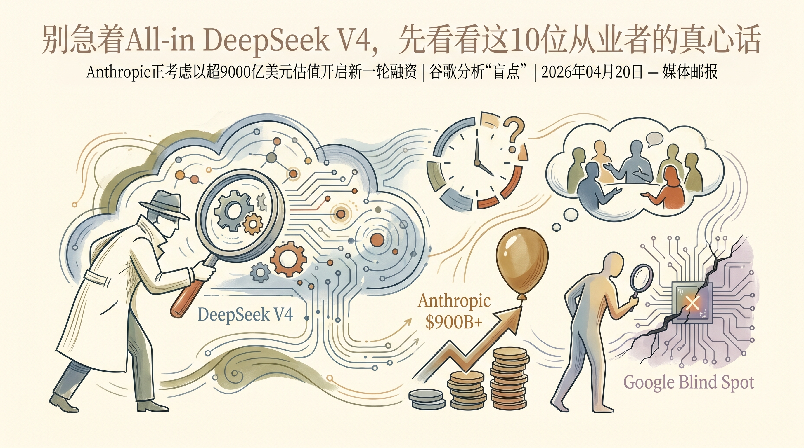

DeepSeek V4引发热议，采用‘模型训练的克制美学’提升性能
两克伴AIGC日报
2026-04-30 星期四

本期关注：DeepSeek V4以“克制美学”提升性能引发热议，Anthropic拟超9000亿美元估值融资，HyperResearch开源深度研究代理超越行业巨头，谷歌探索实证研究助手与Granite 4.1 LLM构建，同时Google Analytics存AI代理盲点。
📰 行业动态
Anthropic考虑以超9000亿美元估值开启新一轮融资
Google Analytics无法捕捉AI代理活动，存在‘盲点’
🔥 今日焦点
近期，Reddit用户u/heisdancingdancing发布了一项名为HyperResearch的创新项目，该项目将Claude Code技能与深度研究框架相结合，旨在打造最智能的深度研究代理。HyperResearch在深度研究基准的代理搜索空间中超越了OpenAI、谷歌和NVIDIA的产品。它是一款开源软件，只需一条命令即可安装，并支持使用用户已有的CC订阅，无需额外支付OpenAI或Gemini Pro的费用。
HyperResearch采用16步流程，在每个会话中创建一个可搜索的、持久的知识库，便于后续搜索的构建。该框架旨在尽可能与原始用户提示保持一致，并集成了内置的事实核查、对抗性审查以及广度和深度调查能力。这一通用框架对AI领域具有重要意义，它不仅提升了深度研究代理的智能化水平，还为研究人员提供了一个高效的知识管理工具。HyperResearch的推出，有望推动AI在深度研究领域的应用和发展。
📚 深度长文
本文深入探讨了Google Research科学家如何运用实证研究助手（Empirical Research Assistance）的四种方式，以提升数据挖掘与建模的效率和质量。文章首先阐述了实证研究助手在数据预处理、特征选择、模型训练和结果评估等方面的应用，并通过具体案例展示了其实际效果。接着，文章分析了实证研究助手在提高研究效率和降低人为误差方面的优势，并提出了其在未来研究中的潜在应用前景。此外，文章还探讨了实证研究助手在跨学科研究中的协同作用，为AI从业者提供了宝贵的借鉴和启示。阅读本文，有助于了解实证研究助手在数据挖掘与建模领域的应用现状和发展趋势，对提升AI研究水平具有重要价值。
***
《Granite 4.1 LLMs: How They’re Built》一文深入探讨了大型语言模型（LLMs）的构建过程，揭示了Granite 4.1 LLM的独特之处。文章核心观点在于，Granite 4.1 LLM通过创新的技术手段，实现了在语言理解、生成和交互等方面的突破。作者详细阐述了Granite 4.1 LLM的架构、训练方法以及在实际应用中的优势。
文章关键论据包括：Granite 4.1 LLM采用先进的神经网络架构，有效提升了模型的表达能力和泛化能力；通过大规模数据训练，Granite 4.1 LLM在自然语言处理任务中表现出色；此外，文章还分析了Granite 4.1 LLM在跨语言、跨领域知识融合方面的独特优势。
《The Download：储存核废料与协调代理》一文由托马斯·麦考利撰写，深入探讨了核能领域中的核废料储存问题以及人工智能在协调相关事务中的应用。文章指出，随着核能支持度的提升，公众对核能的认可度激增，大型科技公司也纷纷投入资金。核心观点在于，面对核废料这一长期挑战，需要制定切实可行的储存计划，并利用人工智能技术优化协调过程。
文章通过分析核废料储存的复杂性和重要性，强调了制定长期储存策略的必要性。同时，探讨了人工智能在数据管理、风险评估和资源优化配置等方面的潜在作用。关键论据包括核废料对环境和人类健康的潜在威胁，以及人工智能在提高储存效率和安全性方面的潜力。
🛠️ 产品推荐
Show HN: Stream iOS Simulators to a Browser Window是一款创新工具，它能够将iPhone模拟器的XPC流捕获并渲染到网页中。该产品解决了桌面应用在预览、截图和读取日志时，陷入osascript循环的问题，使得Claude Code/Codex桌面应用可以利用现有的浏览器工具轻松实现这些功能，提高了用户体验和效率。
***
Show HN: Claude Code Web UI是一款为Claude Code设计的网页用户界面，旨在解放用户对终端的依赖。该产品通过直观的Web界面，让用户无需在终端环境中操作，即可便捷地使用Claude Code的各项功能。此举极大提升了用户体验，降低了技术门槛，尤其适合技术从业者。该产品利用AI技术，实现代码的智能分析、优化和调试，有效解决复杂编程问题，提高开发效率。
***
Show HN：一款免费法律引用验证工具。本产品由具有20年以上经验的公设辩护人和AI工程师共同研发，旨在利用AI技术提升法律工作者对正义的获取。该工具可验证法律文献中的引用是否真实存在，避免因错误引用导致法院罚款。产品通过AI技术对法律文献进行深度分析，确保引用准确无误，有效提高法律工作的效率和准确性。
***